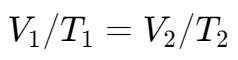
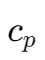

热力学基础
温度 | Temperature
计量单位 | Scales
- Celsius scale
- Fahrenheit scale
- Kelvin scale
- Rankine scale
第零定律 | Zeroth Law of Thermodynamic
If two bodies are in thermal equilibrium with a third body, they are also in thermal equilibrium with each other.
过程与循环 | Processes and Cycle
- Any change that a system undergoes from one equilibrium state to another is called a process.
- A series of states through which a system passes during a process is called the path.
- A system is said to have undergone a cycle if it returns to its initial state at the end of the process.
一些常见过程别称
- Constant temperature process - Isothermal process
- Constant pressure process - Isobaric process
- Constant volume process - Isometric process or isochoric process
- Adiabatic Process - no heat is transferred.
- If the process happens so quickly that there is no time to transfer heat,
- or If a system is very well insulated from its surroundings.
- Polytropic process - occurs with an interchange of both heat and work between the inside and outside.
系统与边界 | Systems and Boundary
- System: a quantity of matter or a region in space chosen for study.
- Surrounding: the mass or region outside the system.
- Boundary: the real or imaginary surface that separates the system from its surroundings.
理想气体法则 | Ideal Gas Laws
Boyle’s Law (1662)
Constant temperature
Charles' law (1780) (Joseph Louis Gay-Lussac in 1802)
 Constant pressure
Combined ideal gas law
比热容 | Specific heat capacity
需要记忆的值：
定压比热：，定容比热：
三者关系：
内能和热含量 | Internal Energy and Enthalpy

多方过程 | Polytropic Process

例题
A piston–cylinder device initially contains 0.7 m3 of air at 100 kPa and 80°C. The air is now compressed to 0.1 m3 in such a way that the temperature inside the cylinder remains constant. Determine the work done during this process.
知识点：边界移动功
此题中温度不变，使用公式：
将 代入上式，得